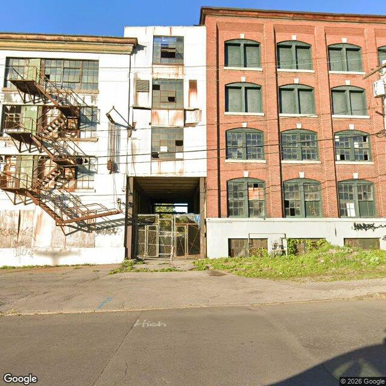

Property entry
1920 Park St
Published 2026-11-02T23:09:35+00:00
Parcel key: 002-04-024

City records
Matches use parcel IDs or normalized property addresses. Nearby properties are not treated as matches. Records may include historical or closed cases; check each record's status and dates. Publication dates are not source-data dates.
Vacant properties 1
- Latitude
- 43.0716101
- Longitude
- -76.164916
- ObjectId
- 1309
- Owner
- Wellington Ward LLC
- OwnerAddress
- 100 Windsor Pl Syracuse, NY 13210
- PropertyAddress
- 1920 Park St
Records refreshed 2026-10-27.
Rental registry 0
No matches stored for this feed. The feed or address matching may be incomplete; this is not confirmation that no records exist.
Records refreshed 2026-10-27.
Code violations 12
- Latitude
- 43.0716101
- Longitude
- -76.164916
- ObjectId
- 107366
- SBL
- 002.-04-02.4
- Vacant
- Residential
- complaint_address
- 1920 Park St
- Latitude
- 43.0716101
- Longitude
- -76.164916
- ObjectId
- 107369
- SBL
- 002.-04-02.4
- Vacant
- Residential
- complaint_address
- 1920 Park St
- Latitude
- 43.0716101
- Longitude
- -76.164916
- ObjectId
- 107373
- SBL
- 002.-04-02.4
- Vacant
- Residential
- complaint_address
- 1920 Park St
- Latitude
- 43.0716101
- Longitude
- -76.164916
- ObjectId
- 107375
- SBL
- 002.-04-02.4
- Vacant
- Residential
- complaint_address
- 1920 Park St
Records refreshed 2026-10-27.
Unfit properties 1
- Latitude
- 43.0716101
- Longitude
- -76.164916
- ObjectId
- 404
- SBL
- 002.-04-02.4
- address
- 1920 Park St
- area_involved
- Premises
Records refreshed 2026-10-27.
AI image observations (unverified)
These observations are generated from an image, not an inspection or an official code finding. No human verification is recorded here.
Image capture date: Not recorded. The entry publication date does not establish the age of the image.
Automated image description
The visible exterior of this multi-story commercial-style building shows signs of significant disrepair, including numerous broken or covered windows, extensive rust on an exterior fire escape, and visible graffiti.
Property type guess: commercial
Visible conditions
- The building consists of at least two distinct sections: a white-painted section with a prominent, heavily rusted exterior fire escape, and an adjacent red brick section.
- Many windows across both sections appear to be broken, missing panes, or covered/boarded from the interior.
- The exterior fire escape on the white section exhibits widespread and severe rust, suggesting significant deterioration.
- Graffiti is visible on the lower portions of the white section and the base of the red brick section.
- The ground area in front of the building contains unmanaged vegetation, including weeds and tall grass.
- An archway or drive-through area in the center of the building features a metal gate structure that appears to be in disrepair.
Condition scores
- Porch Or Entry
- poor
- Roof
- not_visible
- Siding Or Facade
- poor
- Trash Debris
- minor
- Vegetation Overgrowth
- minor
- Windows Doors
- poor
- Yard Or Lot
- poor
Visible flags
- Active Construction Visible
- no
- Boarded Windows Or Doors
- yes
- Fire Damage Visible
- no
- Structural Damage Visible
- yes
- Vacancy Signs Visible
- no
Possible image-only flags
- Extensive broken and missing window panes are plainly visible across multiple floors.
- The exterior fire escape shows severe rust and apparent deterioration.
- Visible graffiti is present on the lower facade.
AI review boxes
- Broken/covered windows: Numerous windows across the facade are visibly broken, missing panes, or covered.
- Severely rusted fire escape: The exterior fire escape shows extensive and severe rust, indicating significant deterioration.
- Graffiti: Graffiti is visible on the lower portions of the building's facade.
- Unmanaged vegetation: Unmanaged weeds and grass are present in the foreground and near the building's base.
Review reasons
- AI requested human review
- Possible image-only issue
- boarded windows or doors
- structural damage visible
Image quality
- Available
- True
- Bytes
- 102796
- Needs Rerun
- False
ACS tract context
Census Tract 2; Onondaga County; New York
- Housing units
- 1686
- Median gross rent
- 146700
- Median household income
- 51848
- Poverty rate
- 28.1
- Renter-occupied share
- 50.1
- Total population
- 3511
- Vacancy rate
- 14.7
OpenStreetMap nearby
60 meter search radius
Nearby map data is temporarily unavailable. This does not mean there are no mapped features.